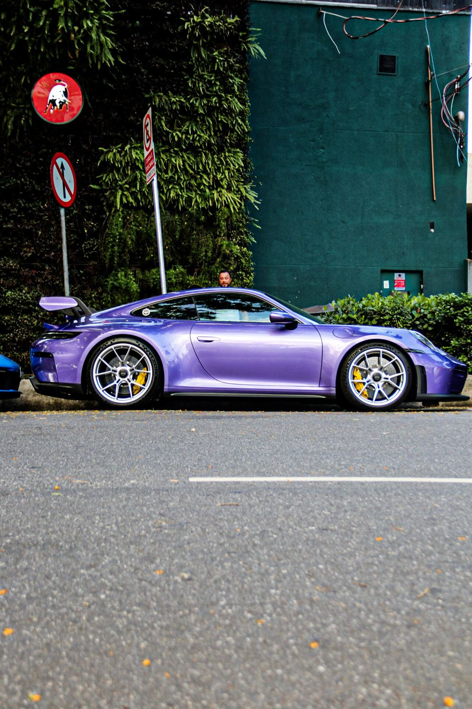
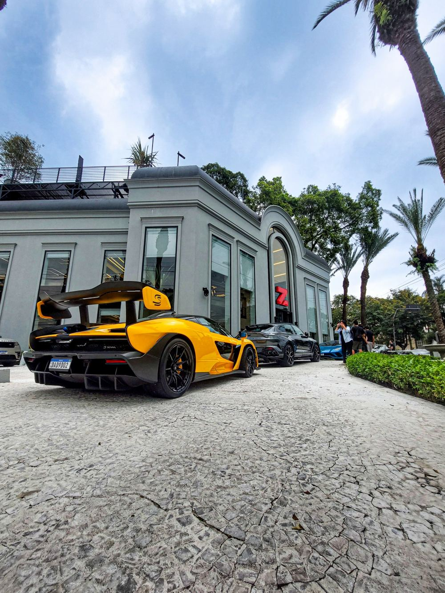
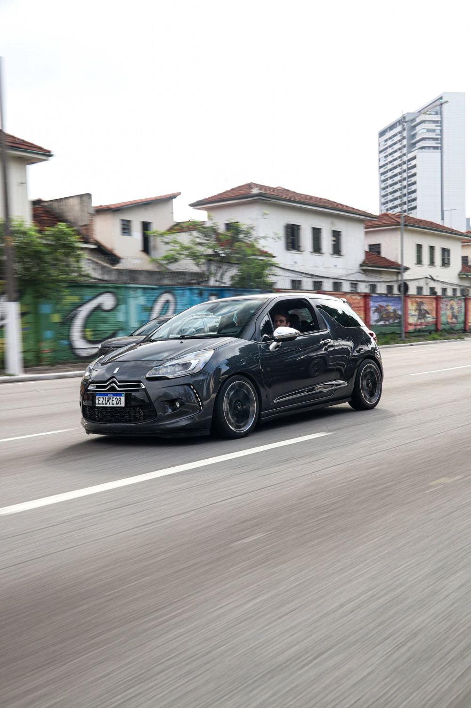
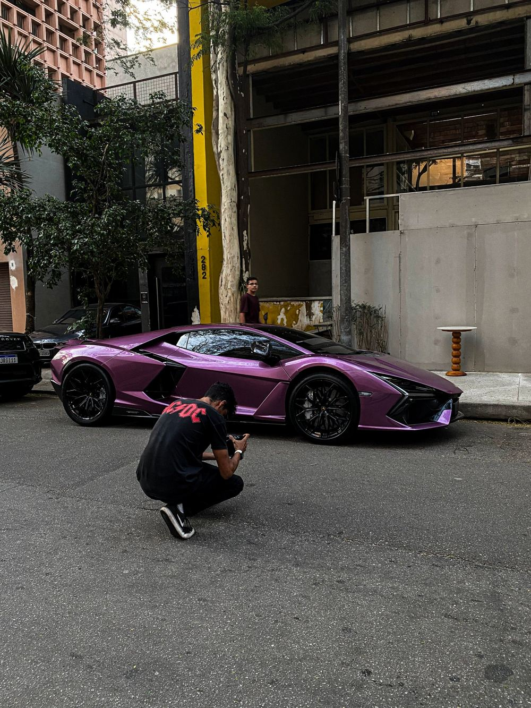

Ensaios privados
Uma sessão dedicada ao seu carro, com retratos, detalhes e fotos em movimento.
Fotografia automotiva em São Paulo
Ensaios privados, fotos para lojas e cobertura de eventos. Do detalhe da carroceria ao carro em movimento.
Ver trabalhos


Osasco, São Paulo
No bairro Bela Vista, em Osasco, a Gatti reúne carros premium, esportivos e superesportivos em seu showroom.
Durante a visita, gravei e editei um vídeo do Audi RS6 e fotografei outros carros da loja. Nas fotos, explorei os reflexos na carroceria, o contraste das lanternas e os detalhes do interior.
Conhecer a GattiRetratos de carros, cenas de eventos e fotografias em movimento.
Planejamos o local, o horário e o estilo das fotos de acordo com o projeto.
Uma sessão dedicada ao seu carro, com retratos, detalhes e fotos em movimento.
Imagens de estoque e veículos em destaque para anúncios, redes sociais e materiais da loja.
Registro de encontros, exposições e lançamentos, dos carros ao público e aos bastidores.

Por trás da câmera
Sou de São Paulo e fotografo carros. Gosto de observar o que dá personalidade a cada modelo e usar a luz, o cenário e o enquadramento para mostrar esses detalhes.
@mvcarsphotographyOrçamentos e parcerias